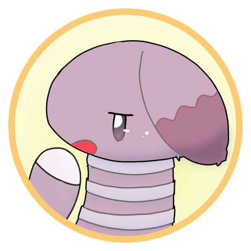

#1 文字と発音を覚えよう
Chanos prama!
案内人のツィ・トルフィチャだよ！


一般参加者のレフ・フォンチャだ。
今回は 文字と発音について 解説していくよ！

お願いします。
1.1. 子音
子音は暗子音と明子音に分類されるよ。


子音に明るい・暗いとかあるのか？
チェルスノー語においては、i を帯びた子音を明子音、
それ以外の子音を暗子音と呼んでいるよ。

よく分からないな。
わからなくても大丈夫！
まずは最も基本的な暗子音から見ていこう！

1.1.1. 暗子音
基本的にはローマ字読みで大丈夫！
一部の文字は特殊な読み方をするから注意してね！

（ ローマ字ってなんだ……？ ）
| 暗子音 | ||
|---|---|---|
| 文字 | 発音 | 発音方法 |
| p | /p/ | パ行の音。 |
| b | /b/ | バ行の音。 |
| t | /t/ | タ行の音。 |
| d | /d/ | ダ行の音。 |
| k | /k/ | カ行の音。 |
| g | /g/ | ガ行の音。 |
| f | /f/ | ファ行の音。 |
| v | /v/ | ヴァ行の音。 |
| s | /s/ | サ行の音。 |
| z, x | /z/ | ザ行の音。 |
| c | /ts/ | ツァ行の音。 |
| sh | /ʂ/ | 舌を反らせてシャ行の音。 |
| zh, xh | /ʐ/ | 舌を反らせてジャ行の音。 |
| ch | /ʈʂ/ | 舌を反らせてチャ行の音。 |
| h | /h/ | ハ行の音。 |
| m | /m/ | マ行の音。 |
| n | /n/ | ナ行の音。 |
| q | /ŋ/ | カ゚行の音。いわゆる鼻濁音の音。英語の ng の音。 |
| r | /r/ | 日本語のラ行の音。巻き舌だと rh になるので注意。 |
| rh | /ʀ/ | 喉奥を震わせる音。巻き舌でもOK！ |
| l | /l/ | 英語の L と同様。ラ゚行。 |
1.1.2. 明子音
明子音はローマ字読みで大丈夫！
一部の文字は特殊な読み方をするから注意してね！
| 明子音 | ||
|---|---|---|
| 文字 | 発音 | 発音方法 |
| j, rhj | /j/ | ヤ行の音。 |
| pj | /pʲ/ | ピャ行の音。 |
| bj | /bʲ/ | ビャ行の音。 |
| tj | /tʲ/ | テャ行の音。 |
| dj | /dʲ/ | デャ行の音。 |
| kj | /kʲ/ | キャ行の音。 |
| gj | /gʲ/ | ギャ行の音。 |
| fj | /fʲ/ | フャ行の音。 |
| vj | /vʲ/ | ヴャ行の音。 |
| sj | /sʲ/ | スャ行の音。 |
| zj, xj | /zʲ/ | ズャ行の音。 |
| cj | /tsʲ/ | ツャ行の音。 |
| shj | /ʂʲ/ | 日本語のシャ行の音。 |
| zhj, xhj | /ʐʲ/ | 日本語のジャ行の音。 |
| chj | /ʈʂʲ/ | 日本語のチャ行の音。 |
| hj | /hʲ/ | ヒャ行の音。 |
| mj | /mʲ/ | ミャ行の音。 |
| nj | /nʲ/ | ニャ行の音。 |
| qj | /ŋʲ/ | キ゚ャ行の音。いわゆる鼻濁音の音。 |
| rj | /rʲ/ | 日本語のリャ行の音。 |
| lj | /lʲ/ | リ゚ャ行。 |

基本的に綴り通り読めばいいし、結構楽かもしれない。
実は子音の明暗は母音によっても引き起こされるので、そうもいかなかったりする。


なんだって……。
ということで、母音についても見てみよー！
1.2. 母音
1.2.1. 明母音
母音で最初に話すべきは明母音でしょう！

母音にも明るさがあるのか。
明母音は直前または直後の子音を明音化させるよ！

なるほど？
| 明母音 | ||
|---|---|---|
| 文字 | 発音 | 発音方法 |
| i | /〇ʲi〇ʲ/ | イ |
| y | /〇ʲi/ | イ |
| e | /〇ʲe/ | オ |
| ö | /〇ʲø/ | 口をすぼめた エ |

発音の欄を見ただけで特殊なのが分かるな。
〇はどういう意味なんだ？
そこに子音がある時、その子音が明音で発音される。
じゃあ、meは /mʲe/のように発音される？
そう。
mis は /mʲisʲ/、
mys は /mʲis/ のように発音される？
そう！
どうしてそんな面倒なことを…。
i だけは後ろの子音にも影響を与える特殊なものだから、きちんと押さえるようにしてね！
1.2.2. 明音化キャンセル
じゃあさ、普通に /me/ と読ませたい場合はどうするんだ？
me と書いたら /me/ になっちまうんだろ？
いい疑問を持つね～。褒めてつかわそう。
なんだこいつ…。
そういう時は u を使うことで、明音化をキャンセルできるよ。
詳しく聞かせてもらおうじゃないか。
なんだこいつ。
| 明音化キャンセル母音 | ||
|---|---|---|
| 文字 | 発音 | 発音方法 |
| ue | /〇e/ | エ |
| uö | /〇ø/ | 口をすぼめた エ |
なるほど。じゃあ普通に /me/ と読ませたい場合は mue と書けばいいんだな？
その通り！
それ以外の母音 a, o, u はこんな感じ。
| 母音 | ||
|---|---|---|
| 文字 | 発音 | 発音方法 |
| a | /a/ | ア |
| o | /o/ | オ |
| ë | /ə/ | 力を抜いてエ |
これらの母音は明音化をキャンセルすることはできないよ。
じゃあ、mina だったら /mʲinʲa/ になるのか。
/mʲina/ としたい場合は ua を使う？
ua を用いて minua と書くこともできるけど、
y を使って myna と書かれることが多いよ。

そのために i と y の二つがあったのか！
規則は多いけど、例外はないから一回覚えれば読めるようになるよ！
学習を進めながらゆっくり覚えるのも手だね。
辞書も見ながら覚えていくか～。
この時、まだ彼は知らなかった。この先に待ち受ける「 恐怖 」を……。
それ言わない方が良くないですか？
第 2 回 へすすむ。